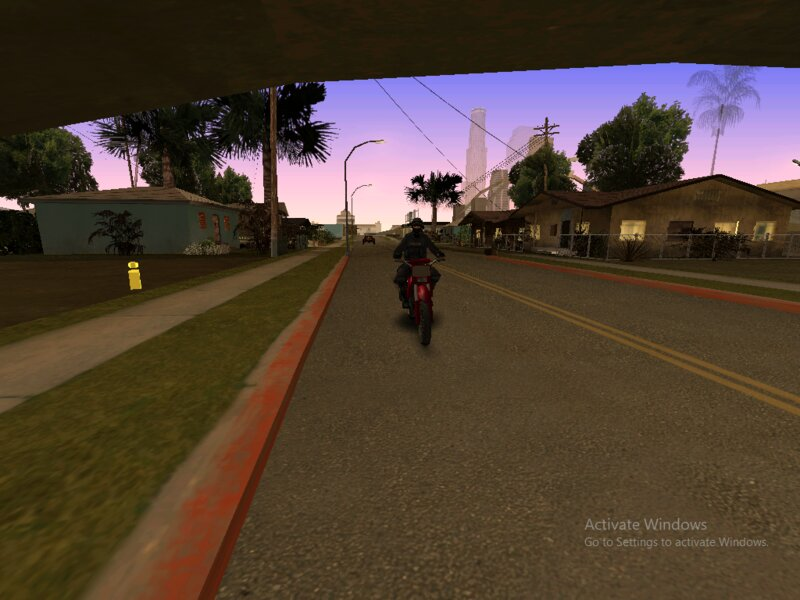
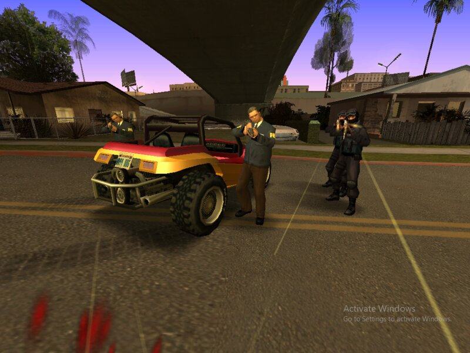
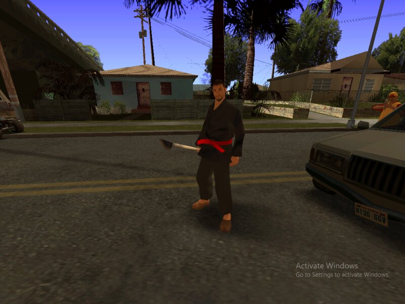
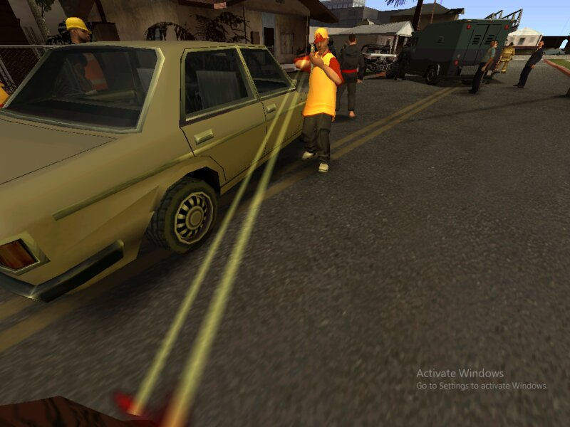
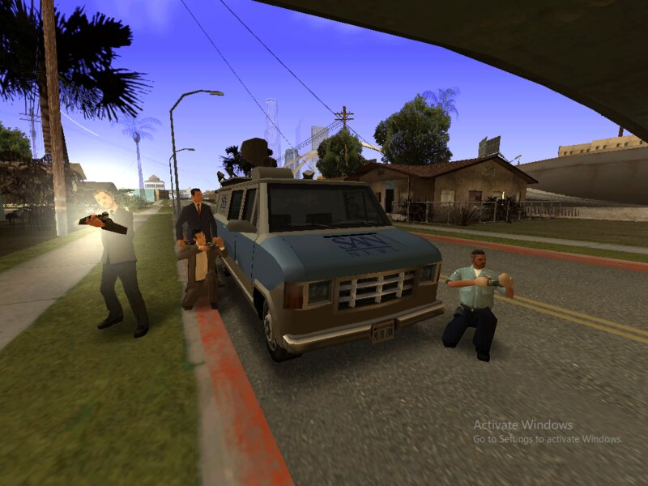

GTA San Andreas: More Police Mod v1.1
Grand Theft Auto: San Andreas vẫn là một trong những tựa game được yêu thích nhất mọi thời đại, và cộng đồng modding của nó vẫn hoạt động mạnh mẽ.



Mod này làm gì?
"More Police Mod v1.1" tập trung vào việc tăng cường sự hiện diện và hành vi của cảnh sát trong game. Nếu bạn đã từng cảm thấy cảnh sát trong GTA San Andreas hơi "hiền" hoặc dễ dàng bị cắt đuôi, bản mod này sẽ thay đổi điều đó. Mặc dù thông tin chi tiết về các tính năng cụ thể của phiên bản 1.1 không được công bố rộng rãi, nhưng các bản mod cảnh sát tương tự thường bao gồm:
- Tăng cường số lượng cảnh sát: Bạn sẽ thấy nhiều xe cảnh sát và sĩ quan hơn tuần tra trên đường, đặc biệt là khi bạn có mức độ truy nã cao.
- Hành vi cảnh sát thông minh hơn: Cảnh sát có thể trở nên hung hãn hơn, sử dụng chiến thuật truy đuổi hiệu quả hơn, và khó cắt đuôi hơn.
- Phản ứng nhanh hơn: Lực lượng cảnh sát sẽ phản ứng nhanh chóng hơn với các hành vi phạm tội của bạn.
- Các loại phương tiện cảnh sát đa dạng hơn: Có thể bao gồm sự xuất hiện của các loại xe cảnh sát đặc biệt hơn như Ranger hoặc Enforcer, tùy thuộc vào mức độ truy nã và khu vực.
Mục tiêu chính của bản mod là làm cho hệ thống truy nã trở nên thử thách và hấp dẫn hơn, buộc người chơi phải suy nghĩ kỹ hơn về hành vi của mình và tìm kiếm những cách trốn thoát sáng tạo hơn.


Tại sao bạn nên thử?
Nếu bạn là một fan hâm mộ lâu năm của GTA San Andreas và muốn làm mới trải nghiệm chơi game, "More Police Mod v1.1" là một lựa chọn tuyệt vời. Nó mang lại:
- Tăng tính thử thách: Đối với những người chơi muốn một thử thách cao hơn, bản mod này sẽ làm cho việc thoát khỏi cảnh sát trở nên khó khăn và thú vị hơn.
- Trải nghiệm nhập vai: Cảm giác bị truy đuổi bởi một lực lượng cảnh sát đông đảo và quyết liệt sẽ tăng cường tính nhập vai, khiến bạn cảm thấy như đang thực sự là một tên tội phạm bị săn lùng.
- Kịch tính hơn: Những cuộc rượt đuổi tốc độ cao sẽ trở nên căng thẳng và mãn nhãn hơn rất nhiều.
Lưu ý khi cài đặt
Việc cài đặt các bản mod cho GTA San Andreas thường yêu cầu một số công cụ hỗ trợ như ModLoader, Cleo(cụ thể hơn là ASI loader), tùy thuộc vào loại mod. Đối với các bản mod thay đổi hành vi hoặc thêm phương tiện, bạn có thể cần:
- Tải xuống mod: Bản mod thường ở định dạng RAR. "1722115496_More Police mod v1.1.rar"
- Sử dụng công cụ cài đặt mod: Các công cụ như Cleo 4.4, ModLoader có thể tự động phát hiện thư mục game của bạn, tùy theo bạn cài đặt và giúp bạn cài đặt mod một cách dễ dàng bằng cách chọn file RAR.
- Thay thế hoặc thêm file: Một số mod có thể yêu cầu bạn thay thế các file game hiện có (ví dụ: một số mod như cài skin, chỉnh file hệ thống game,...). Luôn sao lưu các file gốc trước khi cài đặt mod để tránh lỗi.
Quan trọng: luôn cài AsiLoader và Cleo 4.4 đầy đủ, có thể tải mod
tại đây.
"More Police Mod v1.1" hứa hẹn sẽ thổi một luồng gió mới vào những cuộc phiêu lưu của bạn tại San Andreas, biến mỗi lần truy nã thành một cuộc chiến sinh tồn đầy cam go và hấp dẫn.